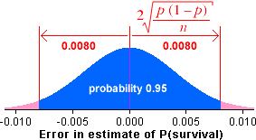

= 0.108 ± 0.008
= 0.108 ± 0.008
Survival of fruit flies on heat-treated mangoes
p = 637/5903 = 0.1079 survived the heat treatment

 = 0.108 ± 0.008
= 0.108 ± 0.008
This diagram uses 95% bounds on the error distribution (or at least the normal approximation to it) to find the 95% CI for the population proportion.
An experiment was conducted to determine the effectiveness of heat treatment of mangoes to kill fruit fly eggs. When mangoes containing 5,903 eggs were heat treated to a core temperature of 43 degrees Celsius, 637 survived to hatch adult fruit flies.